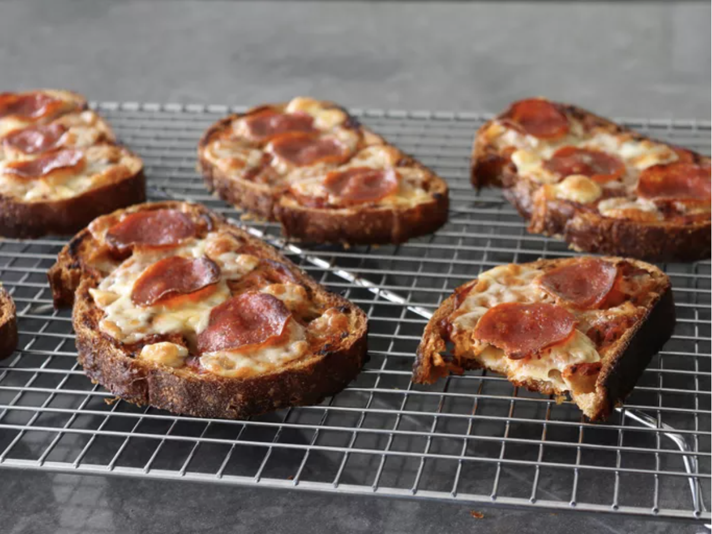

Bread and Butter Pizza

Description
Detroit style pizza through this no-dough pizza hack/recipe. Butter and parmesan on the bottom of the bread caramelizes to create a delightful crunch while the top is soft.
Ingredients
- 6 slices stale French, Italian or Sourdough bread (1/2-inch = 1.27cm thick)
- 6 tablespoons soft unsalted butter
- ½ cup finely grated Parmigiano-Reggiano cheese
- ⅔ cup pizza sauce, or as needed
- 6 ounces mozzarella cheese, diced
- 18 slices pepperoni
Steps
- Preheat the oven to 450 degrees F (230 degrees C). Line a baking sheet with parchment paper.
- Spread butter generously on both sides of the bread slices and set them out on the prepared baking sheet. Freshly grate Parmigiano-Reggiono cheese on top of each bread slice, pressing the cheese lightly into the butter so it sticks better. Turn bread slices over, so cheese side is down. Top with pizza sauce, making sure to spread it evenly on top of the slices.
- Bake in the preheated oven until bottoms start to turn golden brown, 10 to 12 minutes.
- Top with mozzarella and 3 pepperoni slices each (or toppings of your choice). Bake until mozzarella has melted and bottom crust is crispy and well browned, 10 to 12 minutes more.